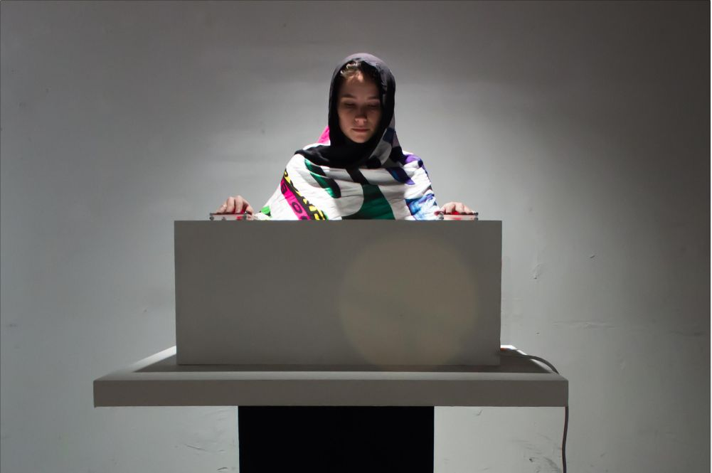
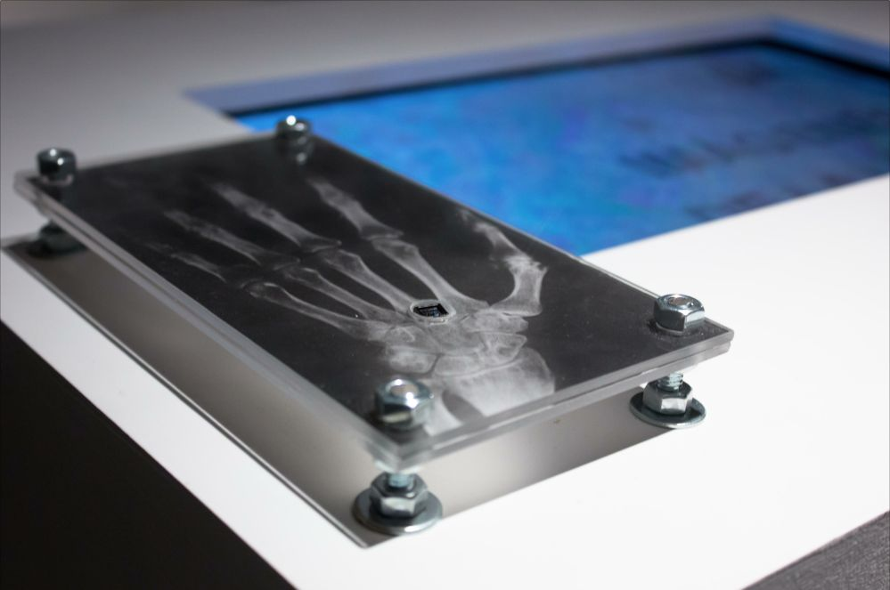
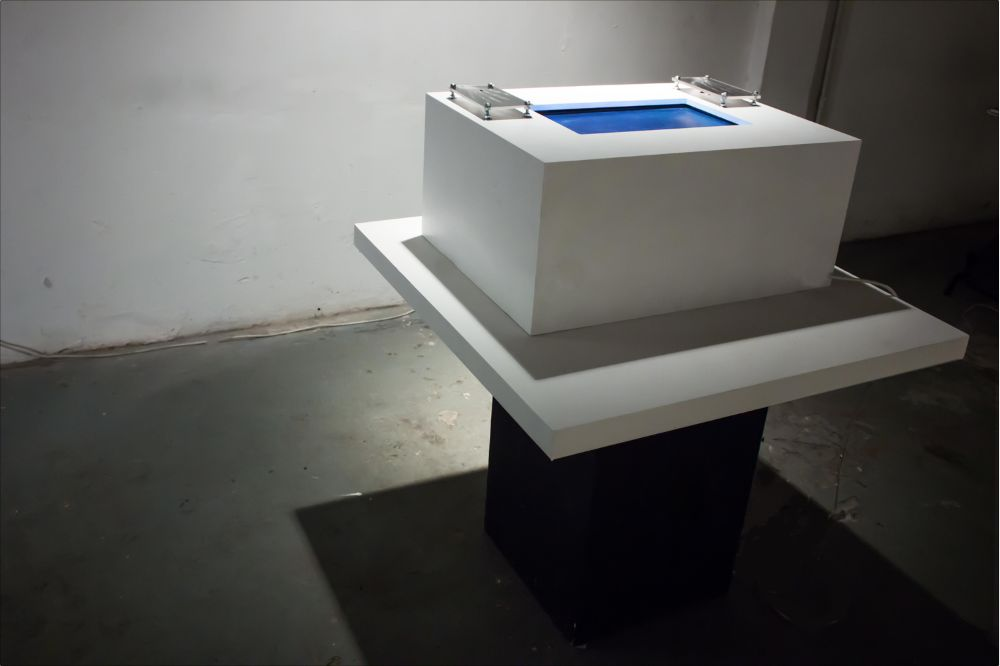
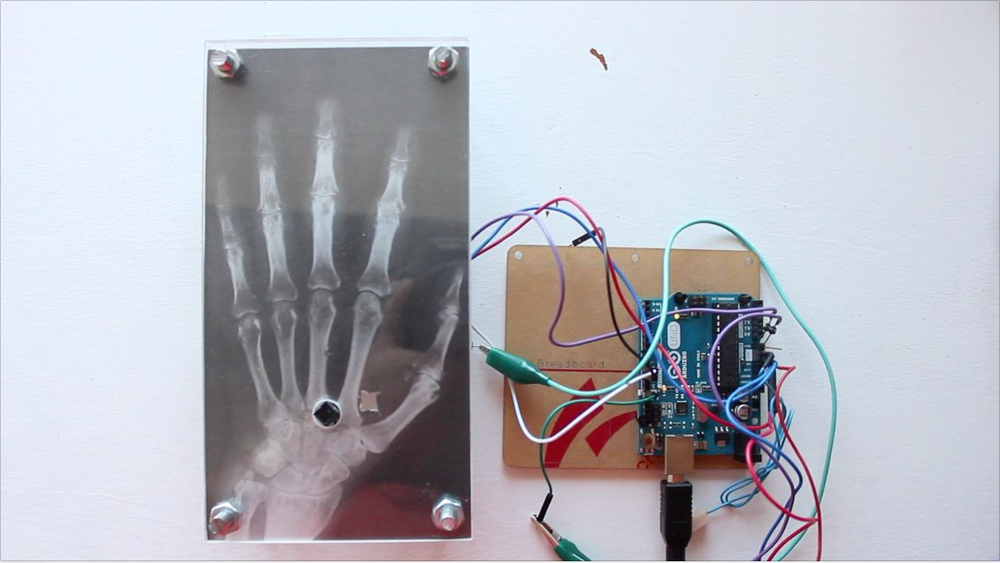
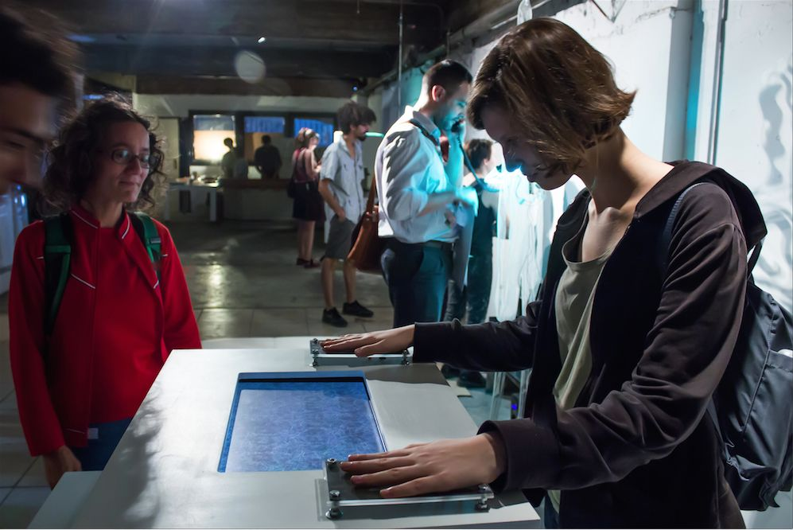
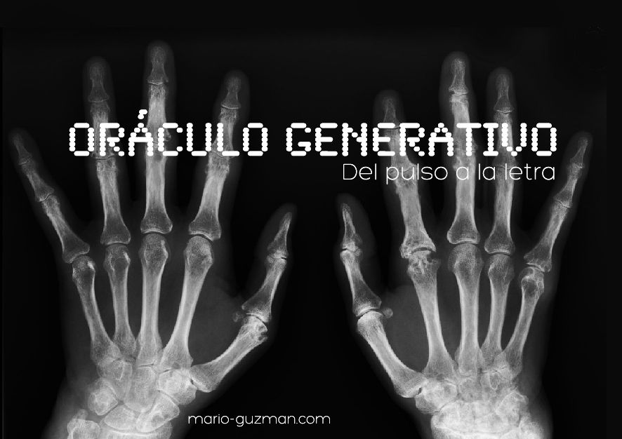

Generative Oracle. From the Pulse to the Letter

The Generative Oracle. from pulse to letter is a technical-symbolic interface that operates as an abstraction of oracular practices to produce enigmatic texts destined to behave as contemporary omens. The work is part of an experimental writing project that focuses on the cooperation between human and machine to experiment with writing (as a process and as a product) as well as a visualization-enunciation performance.
Interactive / Algorithmic Literature / Writing Interface
Microcontroller, generative software, acrylic, infrared sensors. 100 x 90 x 50 cm
Body and text becomes one.
In the Generative Oracle's writing there is no pure present, but a deferred sprouting. The reader accesses a time of waiting where his body participates in the emergence of the text. The omen does not precede and does not exist without the individual, its existence is linked to the complete presence of the subject. In this scenario, text and body are inseparable.


The design.
The user interface consists of a set of signs linked to the notion of future and writing: radiographs of hands lit intermittently by red leds that write in morse code the word destiny (- .... ... - .. -. -). Word that in Arabic maktub simultaneously means 'destiny' and 'inscription'.


Writing contemporary omens.
In ancient times, oracular practice was considered a spiritual and intellectual activity of a religious nature that provided answers to logical and pragmatic dilemmas. Formulated as irrefutable facts, their omens were used to resolve moral, economic, war and territorial conflicts.
Today we recognize the role of polysemy (the very word 'oracle' refers to both the physical space, the enunciator, the discourse and the interpreter) in the productive and enigmatic result of its propositions.
To write these omens, the project received advice from the Department of Ancient Philology at the Faculty of Philosophy and Letters of the University of Buenos Aires to find adecuate critical, literary and philosophical materials.

Exhibitions
- Poextrónica: Past and Future of Digital Literature. Future Zone, 43 Internacional Book Fair, Buenos Aires, Argentina, 2016.
- Young Art Biennial. Konex Cultural Center, Buenos Aires, Argentina, 2015.
- Young Art Biennial. Metropolitan Design Center, Buenos Aires, Argentina, 2015.
- Expansions. The time of digital literature. E-Poetry Festival MUNTREF Contemporary Art Center, Buenos Aires, 2015.
- Erratics. First Experimental Color Center, Santa Fe, Argentina, 2015.
- Parallel in series. Gallery: PANAL 361, Buenos Aires, Argentina, 2014.
Press
- Poextronics
- Hipertext Retorics. Diario Perfil
- Digital poetry Technology came to inspiration. Newspaper La Nación
- Educ.arSebastián Friedman